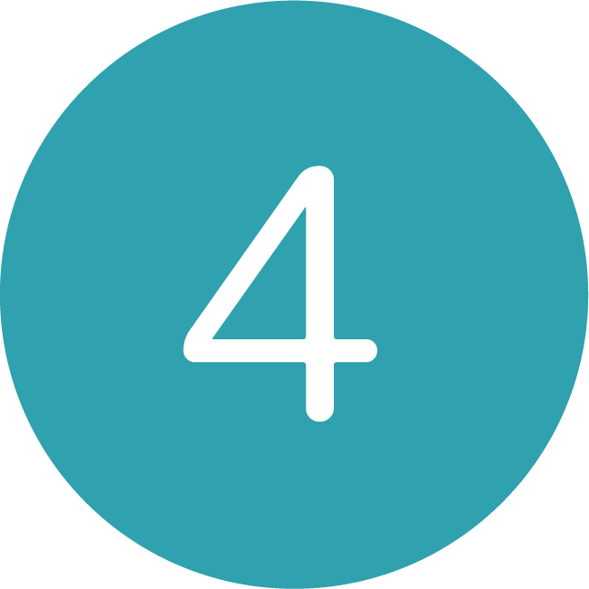

Dreaming
2021 映像制作
-
-
作品紹介
実習課題で制作した映像作品です。
グリーンバックを使い、空をモチーフにした合成映像を使うことを課題として、ショートムービーを作成しました。
初めて実際にスタジオでグリーンバックのセットを使用して、編集作業まで行いました。
-
-
コンセプト
初めての合成映像作品だったため、何よりも楽しんで作ることを目標に作成しました。
コンセプトとして、少しメルヘンでかわいらしく、子供の頃に戻ったような気持ちになれるような作品を目指しました。
合成映像だからこそできる表現だけでなく、それを引き立てるための実写映像の表現にも力を入れ、
映像自体が単調にならない、視聴者を飽きさせないことを常に念頭において制作に励みました。
タイトルの「Dreaming」は、動画の内容である「夢の中」の意味と、子供が描く純粋な「夢」の意味も込めています。
-
-
制作過程

-

-
映像の構成を考える
合成映像とそうでない映像を2種類使用したかったため
映像全体のストーリーと、細部の演出を絵コンテにします。
必要な小道具や扇風機の位置なども記載します。
後に撮影して変更したところもあります。
-

-
グリーンバックで撮影する
①で作成した絵コンテを元に、グリーンバックの撮影をします。
私自身が出演する必要があったため、カメラマン・照明など
撮影に協力してくれた同級生に詳しく作品内容を伝えます。
影が入ると編集で消す作業の分手間がかかってしまうため
なるべく照明で私の影が映らないように光を飛ばします。
扇風機は最大風力にして空を飛んでいる様子をより表現しました。
今回の映像では全4カット分撮影しました。
-

-
合成以外の映像を撮影する
こちらも①の絵コンテを元に、撮影をします。
寝起きのシーンでは、自宅の自分の部屋で1人で撮影を行いました。
目覚ましアラームを鳴らす演出を考えていたため、
撮影用と小道具用として使用するスマートフォンの2台使用しました。
また、構図が同じようなカットにならないようにするために、
似たような構図でも少し視点を変えたり、物撮り挟んだりして、
単調で安っぽい演出にならないように気をつけました。
- 
-
映像の編集
合成映像はAfterEffectsでグリーンバックを透過し、それ以外の映像・音声はPremiereProで編集をしました。
グリーンバックで撮影したジンベイザメは尻尾の揺れを手作業で動かしていたため、どうしても影が映り込んでしまい、
1フレームずつ影を消す作業にかなり時間を取られてしまいました。
-
-
使用ソフトウェア